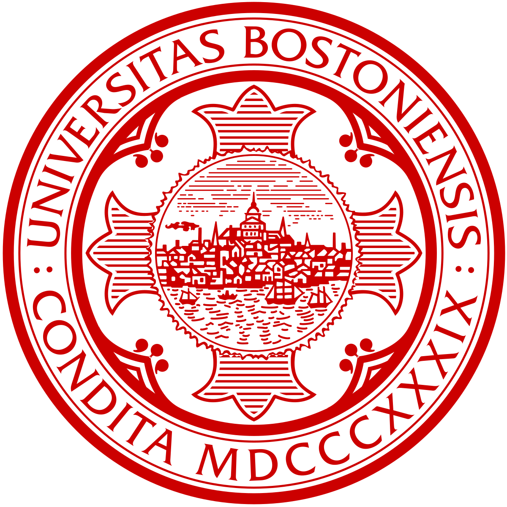

I became a terrier in 2021! Initially, I majored in Biology with a specialization in Neuro-biology, but quickly realized that medicine was not my calling. After that, I switched my major to Computer Science and never looked back. I learned a lot during my tenure at BU, academically and personally. I've met the love of my life, and I also made life-long friends.
Education

Boston University
2021 - Present
GPA: 3.7
Port Richmond High School
2017 - 2021
GPA: 108
Port Richmond High School was where I developed my love for all things stem, especially computer science. I became friends with some of my teachers, and I still keep in touch to this day.